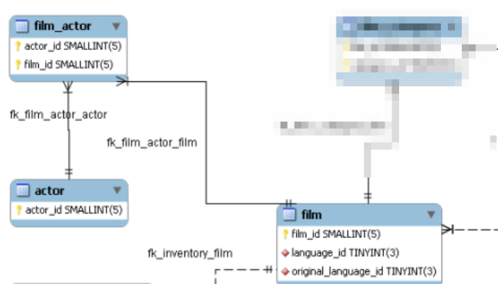

#
import sqlalchemy as sqla
import pymysql
import pandas as pd
username = "" # get this from the instructor
password = "" # get this from the instructor
awsresource = "" # get this from the instructor
port = 3306SQL and Databases - Joins
Fundamentals of Data Science
Joins
What really makes a relational database both efficient and “relational” is the use of the join operation.
To understand what this is, let’s look back at the sakila database, which tracks films and actors, among other things.
One feature of this problem is that the relationship between actors and films is “many-to-many”. That is, a given actor may appear in many films; and a given film includes many actors.
This is captured by the following small part of the “entity relationship” diagram that we considered at the beginning of this lesson.

This diagram says that the table film_actor has a pair of key fields in it: actor_id and film_id. The actor_id points into the actor table, and the film_id points into the film table. So a combination (actor_id,film_id) in the film_actor table says that a particular actor appeared in a particular film.
dbname = "sakila"
dburi = f"mysql+pymysql://{username}:{password}@{awsresource}:{port}/{dbname}"
engine = sqla.create_engine(dburi)
def run_sql(sql, engine):
"send sql to database given by engine and return the result"
with engine.connect() as conn:
result = conn.execute(sqla.text(sql))
return result.all()
def df_select(sql, engine):
"send sql to database given by engine and return the result as a pandas dataframe"
with engine.connect() as conn:
result = pd.read_sql(sqla.text(sql), con=conn)
print(f"Retrieved {result.shape[0]} records")
return resultLet’s look at a few sample lines from the film_actor table.
film_actor_sample = df_select(
"select actor_id,film_id from film_actor limit 10;", engine
)
print(film_actor_sample)Retrieved 10 records
actor_id film_id
0 1 1
1 10 1
2 20 1
3 30 1
4 40 1
5 53 1
6 108 1
7 162 1
8 188 1
9 198 1As you can see, actor number 1 appeared in a bunch of films. If we wanted to see all the films in which he or she appeared, we can use a where query.
actor_one = df_select(
"select actor_id, film_id from film_actor where actor_id=1;", engine
)
print(actor_one)Retrieved 19 records
actor_id film_id
0 1 1
1 1 23
2 1 25
3 1 106
4 1 140
5 1 166
6 1 277
7 1 361
8 1 438
9 1 499
10 1 506
11 1 509
12 1 605
13 1 635
14 1 749
15 1 832
16 1 939
17 1 970
18 1 980On the other hand, a bunch of actors appeared in film 23, so we can ask for the list of actors appearing there.
film_23 = df_select(
"select actor_id, film_id from film_actor where film_id = 23", engine
)
print(film_23)Retrieved 5 records
actor_id film_id
0 1 23
1 4 23
2 22 23
3 150 23
4 164 23Of course, this isn’t very informative. Who exactly is actor 1? And what is film_23?
For that, we have to look in the actor and film table.
print("---actor---")
actor_fields = run_sql("describe actor;", engine)
for x in actor_fields:
print(x[0])
print("\n")
print("---film---")
film_fields = run_sql("describe film;", engine)
for x in film_fields:
print(x[0])---actor---
actor_id
first_name
last_name
last_update
---film---
film_id
title
description
release_year
language_id
original_language_id
rental_duration
rental_rate
length
replacement_cost
rating
special_features
last_updateTo get actor number 1’s name, we use:
actor_one_info = df_select(
"select first_name, last_name from actor where actor_id=1", engine
)
print(actor_one_info)Retrieved 1 records
first_name last_name
0 PENELOPE GUINESSTo get film number 23’s name we use:
film_23_info = df_select(
"select title, release_year, length, rating from film where film_id = 23;", engine
)
print(film_23_info)Retrieved 1 records
title release_year length rating
0 ANACONDA CONFESSIONS 2006 92 RBut suppose we want to construct a table of film information for all of actor one (Penelope Guiness’s) films. Or suppose we want to information of all the actors appearing in “Anaconda Confessions”? We need to somehow combine the relationships captured in the film_actor table with the information about the individual films (in film) and actors (in actor).
The solution to this problem is called a join.
Suppose you have two tables – for concreteness, let’s say they are the film_actor table the actor table. Suppose the two tables have a “key field” that links the information in them together in some way. In this case, film_actor has an actor_id field that corresponds to the info about the row labelled with that actor_id in the actor table.
A join operation makes a new table whose rows are constructed out of the information in the two original tables using the places where the common key field is the same.
There are some variations on this, so let’s look at some special cases.
- Inner Joins If you inner join table one (T1) and table two (T2) on the common key field K you make a new table whose rows are made by choosing a row from T1 with a particular value of K and a row from table T2 with the same value of K and making a new row (K, stuff from T1 row at K, stuff from T2 row at K). This is called an inner join because the rows of the joined table only appear if the key K appears in both T1 and T2.
T1 = pd.DataFrame({"K": [1, 1, 2, 3, 4], "D": ["A", "B", "C", "D", "E"]})
print(T1)
print("--------\n")
T2 = pd.DataFrame({"K": [1, 2, 3, 6], "D2": ["U", "V", "W", "Y"]})
print(T2) K D
0 1 A
1 1 B
2 2 C
3 3 D
4 4 E
--------
K D2
0 1 U
1 2 V
2 3 W
3 6 YIn pandas, you use the merge function to make the join.
J_inner = T1.merge(T2, left_on="K", right_on="K", how="inner", suffixes=("_T1", "_T2"))
print(J_inner) K D D2
0 1 A U
1 1 B U
2 2 C V
3 3 D WNotice that:
- There are two rows with K=1 (why?)
- There is no row with K=4 (because in an inner join, the key has to appear in both parts)
- Left Joins In a left join, you use all the keys on the left; if something is missing on the right, you get rows with missing values.
J_left = T1.merge(T2, left_on="K", right_on="K", how="left", suffixes=("_T1", "_T2"))
print(J_left) K D D2
0 1 A U
1 1 B U
2 2 C V
3 3 D W
4 4 E NaNHere you have a row with K=4, but an NA value in D2.
- Right Joins In a right join, you use all the keys on the right, and get missing values if there’s no corresponding entry on the left.
J_right = T1.merge(T2, left_on="K", right_on="K", how="right", suffixes=("_T1", "_T2"))
print(J_right) K D D2
0 1 A U
1 1 B U
2 2 C V
3 3 D W
4 6 NaN YJ_left = T1.merge(T2, left_on="K", right_on="K", how="left", suffixes=("_T1", "_T2"))
print(J_left) K D D2
0 1 A U
1 1 B U
2 2 C V
3 3 D W
4 4 E NaN- Outer Joins In an outer join, you include rows from both left and right, even if there is no corresponding row on the other side.
J_outer = T1.merge(T2, left_on="K", right_on="K", how="outer", suffixes=("_T1", "_T2"))
print(J_outer) K D D2
0 1 A U
1 1 B U
2 2 C V
3 3 D W
4 4 E NaN
5 6 NaN YThe syntax of a join in SQL is:
select (fields) from (table join table) on key1 = key2To be completely explicit, let’s go back to actors and films. We’ll start by joining actors and the film_actor table. The following query fills in the actor names and, since it’s ordered by film, shows us which actors are in each film.
actor_names = df_select(
"select first_name, last_name, film_id, actor.actor_id from actor join film_actor on actor.actor_id = film_actor.actor_id order by film_id limit 50",
engine,
)
print(actor_names)Retrieved 50 records
first_name last_name film_id actor_id
0 PENELOPE GUINESS 1 1
1 CHRISTIAN GABLE 1 10
2 LUCILLE TRACY 1 20
3 SANDRA PECK 1 30
4 JOHNNY CAGE 1 40
5 MENA TEMPLE 1 53
6 WARREN NOLTE 1 108
7 OPRAH KILMER 1 162
8 ROCK DUKAKIS 1 188
9 MARY KEITEL 1 198
10 BOB FAWCETT 2 19
11 MINNIE ZELLWEGER 2 85
12 SEAN GUINESS 2 90
13 CHRIS DEPP 2 160
14 NICK WAHLBERG 3 2
15 BOB FAWCETT 3 19
16 CAMERON STREEP 3 24
17 RAY JOHANSSON 3 64
18 JULIANNE DENCH 3 123
19 JODIE DEGENERES 4 41
20 SCARLETT DAMON 4 81
21 KENNETH PESCI 4 88
22 FAY WINSLET 4 147
23 OPRAH KILMER 4 162
24 GARY PHOENIX 5 51
25 DUSTIN TAUTOU 5 59
26 MATTHEW LEIGH 5 103
27 MATTHEW CARREY 5 181
28 THORA TEMPLE 5 200
29 KIRSTEN PALTROW 6 21
30 SANDRA KILMER 6 23
31 JAYNE NEESON 6 62
32 WARREN NOLTE 6 108
33 MORGAN WILLIAMS 6 137
34 KENNETH HOFFMAN 6 169
35 REESE WEST 6 197
36 JIM MOSTEL 7 99
37 RICHARD PENN 7 133
38 OPRAH KILMER 7 162
39 MENA HOPPER 7 170
40 MICHAEL BOLGER 7 185
41 FAY KILMER 8 55
42 GENE WILLIS 8 96
43 SUSAN DAVIS 8 110
44 LUCILLE DEE 8 138
45 CHRISTIAN GABLE 9 10
46 ELVIS MARX 9 22
47 RIP CRAWFORD 9 26
48 MENA TEMPLE 9 53
49 RIP WINSLET 9 68If we want to combine both film titles and actor names, we need a double join. This is done in SQL by nesting. The inner query is the one we did above, which we have given the alias T1; then we join that with film on the film_id field.
query = """
select film.film_id, actor_id, first_name, last_name, title, length, rating
from
(select first_name, last_name, film_id, actor.actor_id from actor join film_actor on actor.actor_id = film_actor.actor_id) T1
join
film on T1.film_id = film.film_id order by title
"""
combined = df_select(query, engine)
print(combined)Retrieved 5462 records
film_id actor_id first_name last_name title length \
0 1 198 MARY KEITEL ACADEMY DINOSAUR 86
1 1 162 OPRAH KILMER ACADEMY DINOSAUR 86
2 1 188 ROCK DUKAKIS ACADEMY DINOSAUR 86
3 1 10 CHRISTIAN GABLE ACADEMY DINOSAUR 86
4 1 108 WARREN NOLTE ACADEMY DINOSAUR 86
... ... ... ... ... ... ...
5457 999 140 WHOOPI HURT ZOOLANDER FICTION 101
5458 999 142 JADA RYDER ZOOLANDER FICTION 101
5459 1000 166 NICK DEGENERES ZORRO ARK 50
5460 1000 178 LISA MONROE ZORRO ARK 50
5461 1000 155 IAN TANDY ZORRO ARK 50
rating
0 PG
1 PG
2 PG
3 PG
4 PG
... ...
5457 R
5458 R
5459 NC-17
5460 NC-17
5461 NC-17
[5462 rows x 7 columns]By default, MySQL joins are inner. You can add “left”, “right”, or “cross” (which is what MySQL calls an OUTER join) to specify other options.
query = """
select film.film_id, actor_id, first_name, last_name, title, length, rating from
(select first_name, last_name, film_id, actor.actor_id from actor cross join film_actor on actor.actor_id = film_actor.actor_id) T1 join film on T1.film_id = film.film_id order by title
"""
combined = df_select(query, engine)
print(combined)Retrieved 5462 records
film_id actor_id first_name last_name title length \
0 1 198 MARY KEITEL ACADEMY DINOSAUR 86
1 1 162 OPRAH KILMER ACADEMY DINOSAUR 86
2 1 188 ROCK DUKAKIS ACADEMY DINOSAUR 86
3 1 10 CHRISTIAN GABLE ACADEMY DINOSAUR 86
4 1 108 WARREN NOLTE ACADEMY DINOSAUR 86
... ... ... ... ... ... ...
5457 999 140 WHOOPI HURT ZOOLANDER FICTION 101
5458 999 142 JADA RYDER ZOOLANDER FICTION 101
5459 1000 166 NICK DEGENERES ZORRO ARK 50
5460 1000 178 LISA MONROE ZORRO ARK 50
5461 1000 155 IAN TANDY ZORRO ARK 50
rating
0 PG
1 PG
2 PG
3 PG
4 PG
... ...
5457 R
5458 R
5459 NC-17
5460 NC-17
5461 NC-17
[5462 rows x 7 columns]